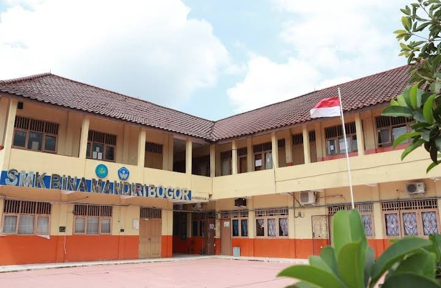
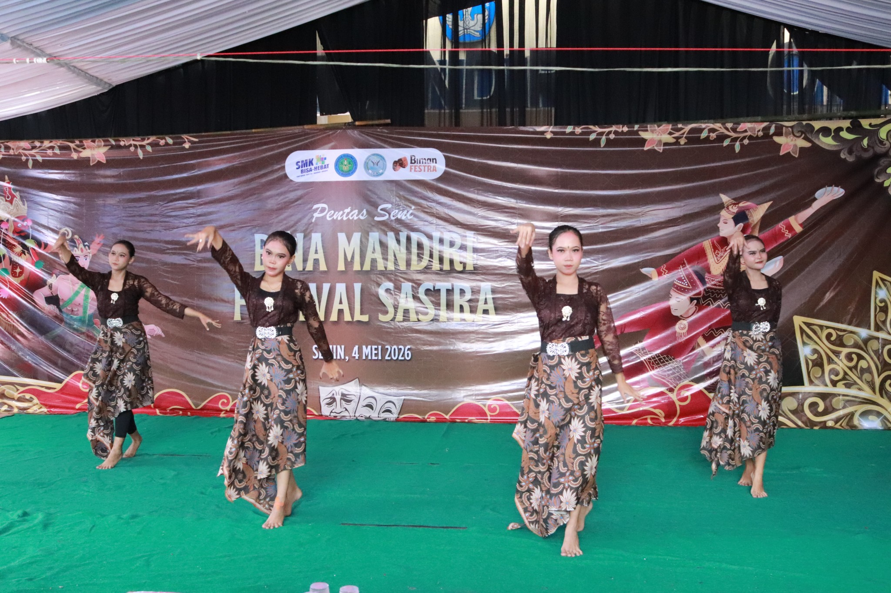

Momen Terkini
Kumpulan kegiatan dan momen siswa SMK Bina Mandiri Bogor.



Prestasi Kami
1st The Best Of Costume & Make Up
Bersinergi dalam PORSENI, Bogor
2nd The Best Of Performance
Bersinergi dalam PORSENI, Bogor
Juara 1 Online Futsal Tournament
Bogor
Profil Sekolah
SMK Bina Mandiri Bogor merupakan lembaga pendidikan kejuruan yang berdedikasi tinggi di bawah naungan Yayasan Kusuma Sari. Kami fokus pada pengembangan skill teknis dan karakter siswa.
Dengan fasilitas modern dan tenaga pengajar profesional, kami memastikan setiap lulusan memiliki daya saing tinggi di dunia industri nasional maupun internasional.
Visi Kami
Menciptakan tamatan yang terampil dan profesional sesuai dengan kebutuhan dunia usaha atau dunia kerja di era globalisasi.
Misi Kami
- Menyiapkan siswa agar dapat menjadi tenaga kerja yang terampil dan produktif serta mampu mengembangkan profesionalisme.
- Menyiapkan siswa agar dapat menyesuaikan pekerjaan untuk mengembangkan profesinya guna meningkatkan kesejahteraan pribadi dan umum sejalan dengan kerangka pembangunan nasional.